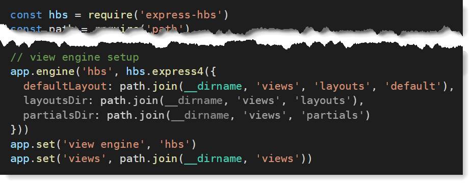

Server-based Web Programming
(1DV023/1DV523)
Lecture
Web Application Architecture


Licence for this work
This work is produced by Mats Loock for the course Server-based Web Programming (1DV023) at Linnaeus University.
All content in this work excluding photographs, icons, picture of course literature and Linnaeus University logotype and symbol, is licensed under a

Creative Commons Attribution 4.0 International License.
You are free to
- copy and redistribute the material in any medium or format
- spread the whole or parts of the content
- show the whole or parts of the content publicly and digital
- convert the content to another format
- change the content
If you change the content do not use the photographs, icons, picture of the course literature or Linnaeus University logotype and symbol in your new work!
At all times you must give credit to: ”Linnaeus university – Server-based Web Programming (1DV023)” with the link https://coursepress.lnu.se/kurs/serverbaserad-webbprogrammering/ and to the Creative Common-license above.
Full stack JavaScript Development

During the course we will use...
- HTML, CSS and vanilla JavaScript on the client.
- Node.js and Express (with Handlebars as the view engine) on the server.
- MongoDB as document database.
The final directory structure
app.jsis the applications entry point.- Routes are stored in separate modules under the
routes/directory. - Controllers are stored under the
controllers/directory. - View templates are stored under the
views/directory. - Static files are stored under the
public/directory. - ...and there are several other opinions.
The dependencies
-
express- Web framework for Node.js.
-
express-hbs- Express handlebars template engine.
-
moment- Manage dates.
-
morgan- HTTP request logger.
-
nodemon- Automatically restarts the application when file changes.
The entry point
- Middleware functions are functions that have access to the request object (req), the response object (res), and the next middleware function in the application’s request-response cycle.
- Application-level: app.use() and app.METHOD(),
(req, res, next)). - Router-level: same as application-level (use express.Router()).
- Error-handling: an error-handling middleware function has four parameters,
(err, req, res, next)). - Built-in:
express.static,express.urlencoded - Third-party: Add functionality.
- Application-level: app.use() and app.METHOD(),
The routing
- The
router.get()androuter.post()methods is two routing functions in Express. - You provide a function to be called for a request matching the method and specified path.
-
You use the
routerobject as an argument toapp.use().app.use('/', require('./routes/homeRouter'))http://localhost:3000/app.use('/home', require('./routes/homeRouter'))http://localhost:3000/home
The controller
- Controller functions...
- ...get the requested data (if any), ...
- ...render an HTML page using a template engine, and...
- ...return HTML to the client.
-
res.render(view [, locals])renders a view and sends the HTML string to the client.view, the path of the view file to render.locals(optional), an object that contains data to pass from the controller to the view.
The view
- A template engine enables you to transform a template to HTML sent to the client.
- Express supports several template engines, such as Pug, Mustache, and EJS.
- We will take a closer look at Express handlebars template engine (express-hbs) with
multiple layouts, blocks and partials.
- Find out more about handlebars expressions at https://handlebarsjs.com/.
Installation and configuration
- Install express.hbs.
npm install express-hbs
- Configure the template engine to use '.hbs' for extensions and find layouts in 'views/layouts'.
Setting views directory for views and view engine as handlebars.
